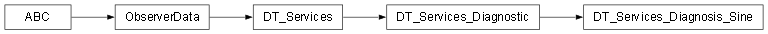

Services package¶

Submodules¶
Services.DT_Services module¶
Copyright (C) 2026 : Milad Zahediyami
This program is free software: you can redistribute it and/or modify it under the terms of the GNU General Public License as published by the Free Software Foundation, either version 3 of the License, or (at your option) any later version.
This program is distributed in the hope that it will be useful, but WITHOUT ANY WARRANTY; without even the implied warranty of MERCHANTABILITY or FITNESS FOR A PARTICULAR PURPOSE. See the GNU General Public License for more details.
You should have received a copy of the GNU General Public License along with this program. If not, see <http://www.gnu.org/licenses/>.
author Milad Zahediyami (milad.zahediyami@u-bordeaux.fr) IMS (UMR CNRS 5218 / University of Bordeaux)
DT_Services.py
Base class for all Services in the Digital Twin. Services typically perform diagnosis, validation, or external actions.
- class Services.DT_Services.DT_Services[source]¶
Bases:
ObserverData
Services.DT_Services_Diagnosis_Sine module¶
Copyright (C) 2026 : Milad Zahediyami
This program is free software: you can redistribute it and/or modify it under the terms of the GNU General Public License as published by the Free Software Foundation, either version 3 of the License, or (at your option) any later version.
This program is distributed in the hope that it will be useful, but WITHOUT ANY WARRANTY; without even the implied warranty of MERCHANTABILITY or FITNESS FOR A PARTICULAR PURPOSE. See the GNU General Public License for more details.
You should have received a copy of the GNU General Public License along with this program. If not, see <http://www.gnu.org/licenses/>.
author Milad Zahediyami (milad.zahediyami@u-bordeaux.fr) IMS (UMR CNRS 5218 / University of Bordeaux)
DT_Services_Diagnosis_Sine.py
Diagnosis service for sine wave data. Performs random validation checks by comparing raw sine values with model predictions, and performs anomaly detection whenever the Digital Model notifies it of new data.
- class Services.DT_Services_Diagnosis_Sine.DT_Services_Diagnosis_Sine(model: DT_Models_Descr_CubicBSpline)[source]¶
Bases:
DT_Services_Diagnostic- ANOMALY_THRESHOLD = 0.15¶
- detect_anomaly(index: int, actual: float, expected: float)[source]¶
Detects anomalies by comparing raw sine value with model prediction. If error exceeds the threshold, prints an alert (can be extended to log, notify, etc.).
- Parameters:
index – Current sample index.
actual – Actual value from physical data.
expected – Expected value from the model.
- perform_random_check(count: int)[source]¶
Performs random validation checks (original behaviour).
- Parameters:
count – Number of random checks to perform.
- set_latest_data(data: DT_Data_SineValues)[source]¶
Sets the reference to the latest data source. This is needed for chart updates and accessing raw sine values.
- Parameters:
data – The sine data source.
Services.DT_Services_Diagnostic module¶
DT_Services_Diagnostic.py
Base class for diagnostic services. Placeholder in the inheritance hierarchy.
This is the Python equivalent of Services/DT_Services_Diagnostic.java.
@author Zeeshan ALI, Mamadou Kaba TRAORE @version 1.0 (Python port)
- class Services.DT_Services_Diagnostic.DT_Services_Diagnostic[source]¶
Bases:
DT_Services